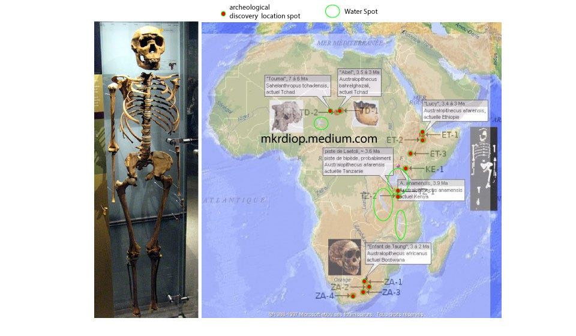

Primate tribes and water spots
An adage of my country says Go where water used to stagnate and you will find stigmata


Water is the source of life is maybe something obvious to say but it can be useful to remember it because our environment shapes us as we also shape it. We are two interconnected nodes that keep communicating so it is useful to understand the environment for understanding us better and for knowing what matters. Here it is not about where it started and how it started but just for the sake of illustrations and frankly, the distribution of the red and green spots is open for any kind of comment and theory but the pattern that I was willing to highlight here is that all these archeological discoveries are found near a water spot and to chase a probabilistic explanation of that. the probabilistic explanation is as simple as we human beings always group ourselves sentimentally and geographically where our interest is and where our living is more guaranteed. Spots of water were and are still for some present tribes the most important shared interest so it is sure that we were a lot there where water was why it more probable today to find our footprints near these spots of water.
Probabilistic thinking is a great tool for bringing plausible explanations of things. Since this field is now clearly connected to strong mathematical theories, it promises very interesting developments that could help us understand our world better and act better.
here the data! Spot the discoveries for the continent you are living in now, and tell me if you can. In my case, I just superposed two images and There you go.